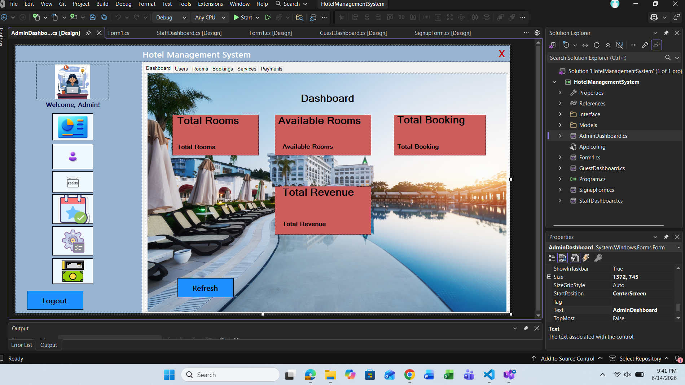

Hotel Management System
C# & SQL Server Developer · 2025
Responsibilities:
- Designed and developed a complete hotel management system using C# Windows Forms.
- Implemented guest registration, room booking, and check-out features.
- Connected the application with SQL Server database.
- Created separate dashboards for Admin and Guests.